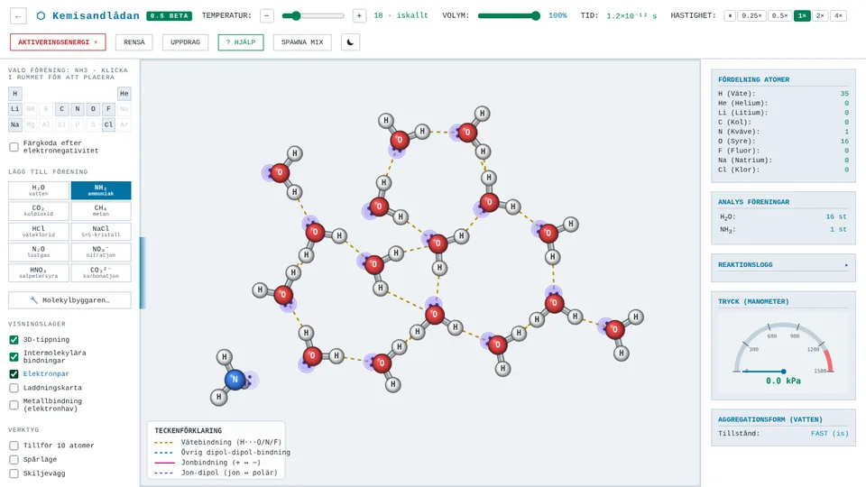
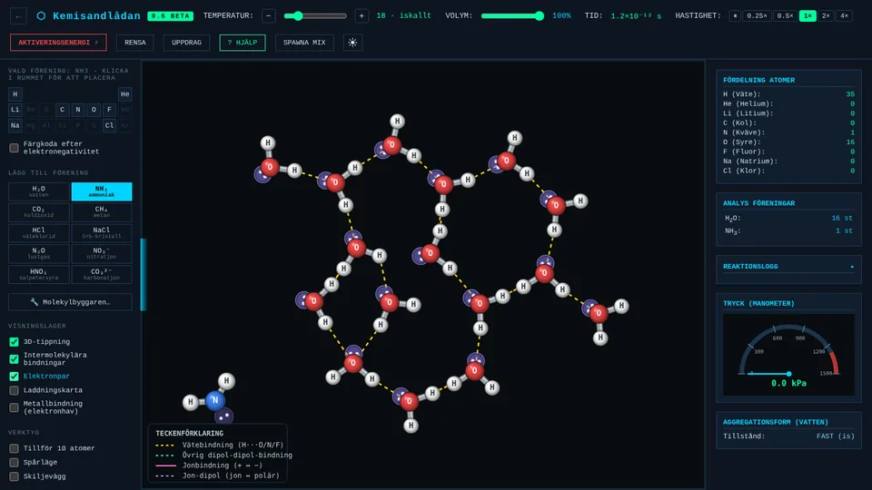

KemisandlådanBETA 0.5
En partikelsimulator. Placera atomer och molekyler och se vad som händer: bindningar bildas och bryts, vatten fryser till is, syror protolyserar och salter löses. Temperatur och volym går att ändra medan tryck, koncentration och pH följs.
Sexton guidade uppdrag, de flesta i formen förutsäg, observera, förklara.
- Stökiometri
- VSEPR och polaritet
- Fasövergångar
- Syror och baser
- Jonbindning
- Diffusion